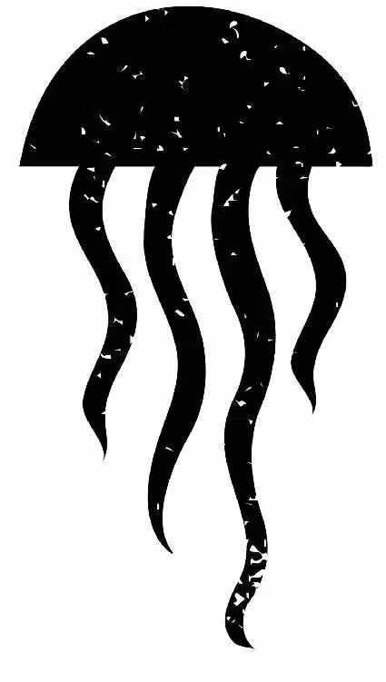

Outside the Marine Life Institute, Marlin and Nemo were wondering how they were going to get inside the Institute. Fluke and Rudder were still “Ooo-roo-ing,” and things were looking hopeless.
“What are you doing?” Marlin asked. “What is that?”
“Calling her over, of course,” said Fluke.
“Calling who?” asked Marlin.
Almost instantly, a flock of loons landed nearby. The loons parted to reveal the wackiest-looking one of all. “Lads, meet Becky,” said Fluke. Rudder spoke to her in her loon language, and she responded with a loud SQUAWK!
“Flying?” screamed Marlin. “No, no, no, no new information. Listen, tell her thank you. I mean, you guys have gone above and beyond, really. But is there a way to get in that involves water? Like swimming? Because that’s really our strength,” said Marlin.
“Look, your friend is going to be in Quarantine. That’s where they take the sick fish,” explained Fluke.
“And the one — and only one — way into that place ... is Becky!” said Rudder.
Becky squawked again, landing right behind Marlin and Nemo.
Marlin jumped, laughing nervously. “Hi, Becky.”
Becky started to peck Marlin. “I think she likes you, Dad,” said Nemo.
“Becky, love?” said Fluke adoringly.
Becky stopped pecking and looked up at Rudder and Fluke, curiously cocking her head. “These two nice fish need to get into Quarantine,” said Fluke.
“Are you free today, Rebecca darling?” asked Rudder.
Becky cooed as she looked at Marlin.
“Becky is, uh ... Would that work with your schedule?” Marlin asked awkwardly. Becky began pecking at Marlin again.
“Ow!” Marlin screamed. “She doesn’t understand what I’m saying.”
“All you have to do is imprint with her, mate,” said Fluke.
Marlin was confused.
“Look her in the eye and say ‘Ooo-roo,’ and she’ll be in sync with you.” Fluke was suddenly very serious. “Now, look her in the eye!”
“Yeah!” added Rudder. Marlin pulled Nemo aside, and the two slinked underwater to speak privately.
“Nemo, I think we should discuss an alternate plan. One that involves staying in the water, and with someone sane, because this bird, this bird — this ain’t the bird!”
“That’s fine, Dad,” said Nemo. “And in the meantime, Dory will just forget us. Like you said, it’s what she does best.”
“Fine,” Marlin said with a resigned sigh. The fish swam to the surface, and Marlin cautiously approached Becky. “Look her in the eye,” he said to himself. Then he turned toward the loon. “Which eye?”
“Just pick one, mate,” said Fluke.
Marlin tried again. “Becky?”
Becky tilted her head and looked down at him with her crooked eyes. Then she began to coo.
“Roo,” said Marlin, trying to speak Loon. “Ooo-roo.”
Becky squawked. She sidled up next to Marlin and wrapped her wings around him as their lines of vision synced. Nemo laughed while Becky cooed.
“Okay, now, this is all great,” said Marlin, spitting out feathers. “But how, exactly, is Becky supposed to carry us?”
“Aw, yeah,” said Fluke. “I almost forgot.”
Gerald was off in the distance, holding his small pail in his mouth. Fluke called to him, “Gerald!” With his flipper, he motioned for Gerald to come over.
“Hmmm,” Gerald said, looking over at them hesitantly.
“Yeah! Gerald!” shouted Rudder in a friendly voice.
“Come on, son!” said Fluke. He and Rudder grinned widely.
Gerald hesitated, contemplating.
“Come on, Gerald,” said Fluke. “Give us your pail.”
Gerald shook his head. “Uhn-uh.”
“We’ll let you sit on the rock ...,” said Fluke temptingly.
“Yeah, Gerald. We swear it,” added Rudder.
Gerald cautiously inched forward as Fluke and Rudder coaxed him over. “That’s right,” said Fluke. “Shimmy on over here.”
“C’mon,” added Rudder. “You can do it.”
“That’s right.”
“Mind you don’t scuff your bum,” warned Rudder in a sweet voice.
Gerald giggled happily and put down the pail as he settled in. He continued to laugh and chuckle as if he were simply too happy to form words.
“Thank you so much, Gerald,” said Fluke.
“Welcome to your time on this rock,” said Rudder.
“Comfortable, isn’t it?” said Fluke.
They sat in silence for a short moment, and then Fluke and Rudder lunged at Gerald, yelling in his face. “TIME’S UP! Now get off, Gerald!” shouted Fluke.
“Off! Off! Off! Off!” barked Rudder.
Gerald leapt into the water without his pail and swam away.
Becky scooped Marlin and Nemo into the bucket with a bit of water.
“This is nuts!” shouted Marlin. “Why do I keep getting talked into insane choices?”
Marlin and Nemo screamed as Becky squawked and flew into the sky, carrying them toward the Institute.
